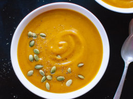

Pumpkin Soup (vegan)

Whip up a spooky vegan pumpkin soup this halloween! It's creamy, rich and satisfying and ready in under 30 mins!
Ingredients
- 1 tbsp coconut oil
- 1 medium chopped onion
- 2 cloves crushed garlic
- 1 tsp minced ginger
- 1 tsp thyme
- 1/2 tsp cayenne pepper
- 9 cups pumpkin peeled and cubed
- 14oz can coconut cream
- 1 and 1/2 cups vegetable broth
- salt and pepper to taste
Method
- Add the coconut oil to a pot with the chopped onion, garlic and ginger and sauté.
- Then add the thyme and cayenne pepper and sauté until the onions are softened.
- Add in the coconut cream and vegetable stock and the pumpkin and bring to the boil.
- Turn down the heat and simmer until the pumpkin is soft and cooked (around 10 minutes).
- Use an immersion blender to blend it smooth inside the pot. If you haven’t got an immersion blender, then transfer to a blender jug in stages and blend until smooth.
- Add salt and pepper to taste.
- Serve with some pumpkin seeds as garnish (optional).
Back to Home Page